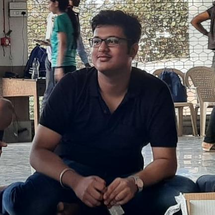

THE SILVER LINING.
By Abhishek Jha
July 8, 2020
The much talked about pandemic has brought us at a point which is ….umm… perhaps I’ll let it be and not try and describe it, there’s risk, there’s fear, there’s this newfound or re-discovered love for our family now that we have been with them 24 X 7 for over 3 months, there’s Ramayan and Mahabharat I’m sure everyone has been made to watch them, on a side note, they are actually good if you can tolerate a bit of “Sanskaari-Hindi”.
Don’t know about Ramayan but mini-Mahabharats have somewhat become a part of our lives and then, of course, our dear neighbours (not the uncle you’ve never seen in your life) China, Nepal, Pak — a common feature in my blogs. If you somewhat follow the news you must have heard about the Delhi Earthquakes, Locust attacks, Amphan and Nisarga — cyclones, all calamities seemingly have fallen in love with our country (Modiji’s beard perhaps…).
But is this all? Do we expect only doom to come our way? Is the situation entirely hopeless? Or have we missed something?
I’m sure everyone must have noticed at least a few people on their friend-list creating social media pages dedicated to perhaps their art or their writing or something of that kind, you may find it annoying too, perhaps an overdose of “like, share and subscribe”, but that’s not the point, these are the people I want to talk about.
So to begin with, who are these people? how have they suddenly discovered their passion, and more so, how at the same time?
These people definitely haven’t popped out of anywhere, nor they have suddenly discovered their artistic side they knew they had it in them, what they didn’t have until now was an opportunity when they could pursue their talents without having questions and objections raised to them.
These people have been forced (directly or indirectly) to do stuff that they might not hate but isn’t their first love, stuff that isn’t their passion and we find the largest lot of such people in our very own engineering colleges.
Now, this pandemic has presented these people with an opportunity that might define their lives ahead, they have been presented an opportunity to show the world what they’ve got and with literally billions of people stuck in their homes not knowing what to do and courtesy-Ambani Saheb in our country, with dirt-cheap internet connections, these artists and writers have got the audience that the previous generations might have only dreamt of.
Do you realise that if not for this lockdown we would have never found out that the girl who always sits on the first bench and seldom interacts with anybody is also a great painter? Can’t say for you but my perception about that person definitely changes, I would hold her in higher regard now that I know of her artistic abilities. And if I’m not alone then isn’t that in itself something great?
Let’s also be practical, not everyone is going to make it but do you realise how big it’s still for them, for all of them that they can at least be content that their inner artist just didn’t die inside them after school, at least they could show the world that their college degree or profession isn’t just what defines them.
So, all-in-all I want to remind everyone that these gloomy-doomy times aren’t all gloomy there’s still something to appreciate.
About Abhishek
"If you can describe yourself in 2 lines then you got to think about what you have been doing with your life. "